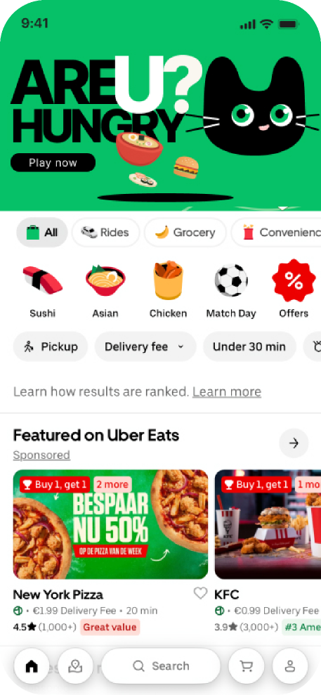
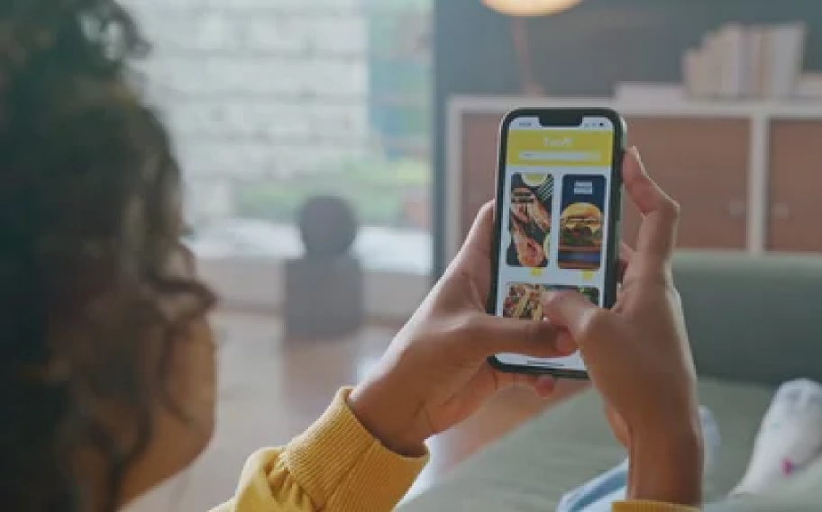
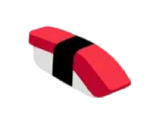
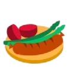

Uber Eats
Food
Miner
AI handles the search. People keep the final choice.
1 choice

Hunger was not
the problem.
User journey & opportunity
People opened Uber Eats ready to order, then lost momentum inside an abundance of plausible options. The effort moved from finding food to managing uncertainty.
I mapped the journey from opening the app to completing an order. The greatest friction appeared before checkout: repeated scrolling in Explore and repeated comparison between restaurants, dishes, prices, and delivery conditions.
More information did not create more confidence. It increased the number of decisions a hungry person had to make before reaching the decision that actually mattered.
- OpenVague hunger
High intent, low specificity
- ExploreScroll broadly
Restaurants, cuisines, offers
- CompareRevisit options
Price, distance, taste, value
- DecideOrder or leave
Confidence has already dropped


Product opportunityLet AI absorb low-value screening so the user can focus on the final choice.
Automate the search.
Keep the choice.
AI product definition
The opportunity was not to let AI order on someone's behalf. It was to compress the least rewarding work and protect the moment of agency.
I separated the decision process into three jobs: exploring the option space, comparing viable candidates, and making the final judgment. AI could take on the first two; the user should always own the third.
Filter the catalogue, weigh preferences, and reduce the field to six distinct candidates.
Review a small set, follow appetite and intuition, then deliberately choose one.
AI narrows the field; it does not remove the person from the decision.
Six options.
One deliberate tap.
Food Miner mechanism
Food Miner turns recommendation into a short, playful decision loop: the system computes a compact pool, the user catches one option, and a reward confirms the action.
- 01Compute
Read history, preferences, restaurant context, price, and delivery fit.
- 02Surface six
Balance familiar choices with a controlled amount of discovery.
- 03Hook one
Turn the final selection into a quick, user-led action.
- 04Reward
Unlock a deal and carry the chosen dish into the order flow.
Today's treasure pool
Three familiar options + three discovery options


Embedded in the flow,
not added beside it.
Information architecture & high-fidelity prototype
The MVP starts where the existing habit already starts: the Uber Eats home screen. Food Miner becomes a new decision shortcut, not a separate destination to learn.
I designed the product structure, interaction sequence, and high-fidelity prototype from problem definition through the Hackathon demo.
The visual language borrows Uber Eats' directness, then adds a playful catcher and a vivid green interaction field to make the AI moment obvious without breaking the surrounding product.
Many entry points compete for attention before a decision begins.

A prominent entry compresses exploration into one intentional choice.
Recommendation logic
Concept inputs used to build the six-option pool
Repeated cuisines, dishes, and price ranges.
Availability, distance, speed, and current conditions.
Relevant offers and discovery opportunities.
A small set that feels relevant without becoming repetitive.
Prove the loop
before the model.
MVP validation
The prototype tested the product proposition first: can a compact, AI-curated choice feel faster while remaining clearly under the user's control?
Explore and Compare collapse into one six-option pool.
Time to first committed choiceA reward turns selection into a clear next action.
Start-to-checkout conversionAI recommends; the user still chooses the final dish.
Perceived agency after selectionThe Hackathon result is directional concept evidence, not a production recommendation-system evaluation. The next phase would compare Food Miner with the standard browse flow using behavioral and self-reported measures.
Good AI removes effort,
not agency.
Contribution & reflection
My contribution
- Mapped the full decision journey and reframed repeated browsing as an AI product opportunity.
- Designed the Food Miner recommendation mechanism and the compute, choose, reward product loop.
- Owned the information architecture, interaction flow, and high-fidelity MVP prototype.
- Defined the value hypotheses for decision time and order-completion intent.
What I would do next
- Test whether six options is the right constraint across different hunger states and dietary needs.
- Make recommendation logic inspectable so people can understand and tune why an option appeared.
- Benchmark richer recommendation approaches only after the interaction model proves its value.
The best AI shortcut does not make the decision invisible. It makes the meaningful part of the decision easier to own.
Return to selected work